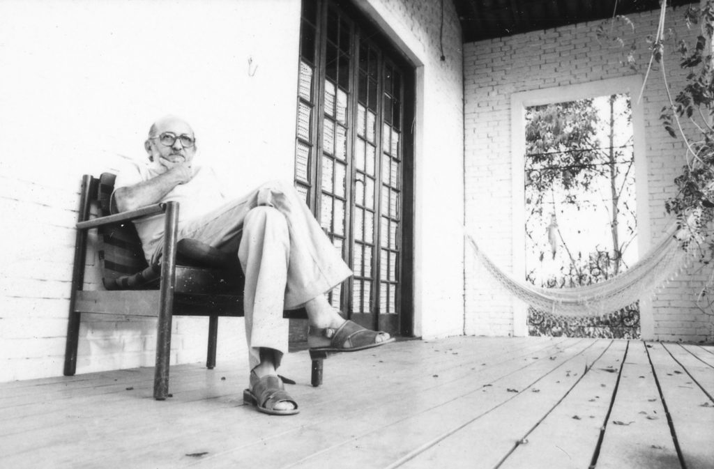

O PROFESSOR E EDUCADOR PAULO FREIRE
Nascido em 1921, no bairro de Casa Amarela, em Recife (PE), ele obtém, em 1937,
bolsa de estudos para cursar o ensino secundário no Colégio Oswaldo Cruz,
onde se torna professor de língua portuguesa...
Saiba Mais
Saiba Mais
100 ANOS DEPOIS: PAULO FREIRE
De Angicos a São Paulo, passando pela África: todas essas experiências ajudaram
a formar a imagem que se tem de Paulo Freire no Brasil e no mundo. Mas usar os feitos na alfabetização de adultos...
Saiba Mais
Saiba Mais
O PENSAMENTO DE PAULO FREIRE
Em toda a sua obra, Paulo Freire pensa a existência concreta, a vida humana, e propõe,
a partir da afirmação total de uma ética universal humana, uma concepção de educação, uma epistemologia...
Saiba Mais
Saiba Mais